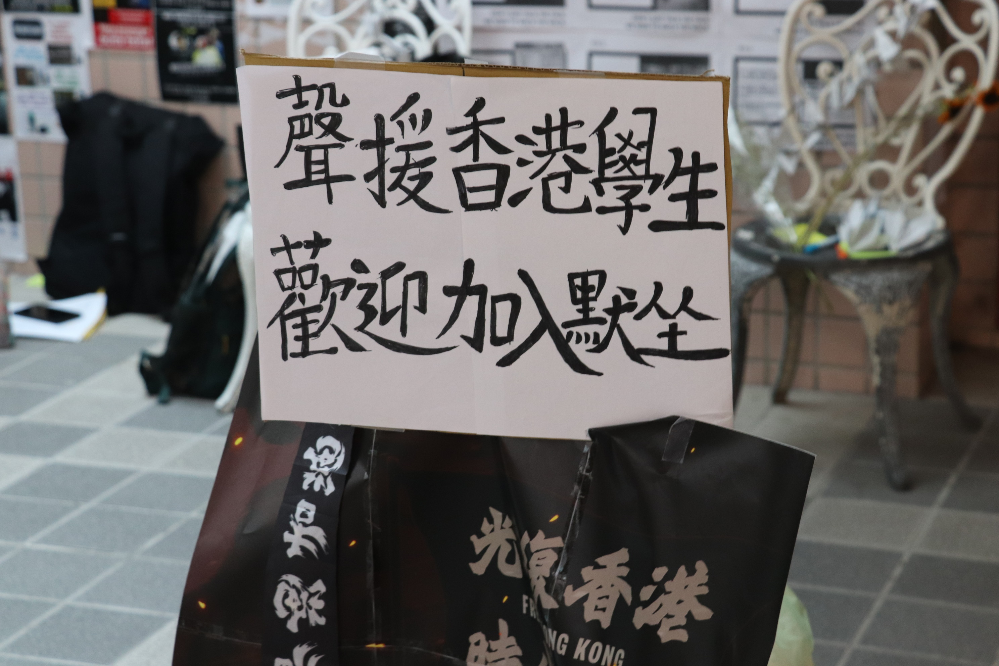
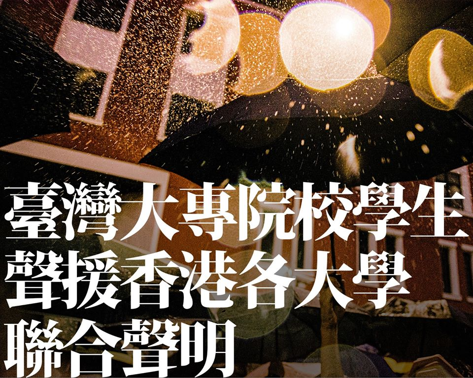

校園
港警攻校情勢升溫 政大生自發靜坐挺香港
刊出日期：2019/11/14
【記者白欣綜合報導】自11日起，香港警察為逮捕「大三罷」（註1）示威者，進入多所香港大學校園。據《轉角國際》12日報導，港警以橡膠子彈攻擊學生頭部、針對香港城市大學宿舍無差別投放催淚彈等一連串攻擊行為，引起各界關注。對此，國立政治大學學生自發呼籲師生於14日在政大綜合院館連儂牆前參與靜坐活動，聲援香港大學生。
註1：香港網友發起罷工、罷市、罷課的「大三罷」，呼籲參與者以「全城癱瘓、強制罷工」行動，堵塞交通樞紐。
發起靜坐活動的政大學生K（化名）表示，過往聲援反送中的聲音只停留在網路，「作為台灣的高等學府，我們是有能力站出來表態的。」K說明，本次靜坐活動是為抗議港警攻入港中大等校的暴力行為，他認為警察攻入校園已嚴重干預學生自由、危害大學自治。
參與靜坐的政大社會學系、港籍學生ABC（化名）強烈譴責港警的攻擊行為，「這是很過分、不文明的舉動。」ABC感嘆，目前自己能為香港做的，僅有加入聲援靜坐，盼藉此引起大眾關注。同樣參與靜坐聲援活動、政大政治學系台生H（化名）則說：「與其只是保持關注，不如自己站出來。」H表示，台港澳三個地區都跟中國有密切關聯，任何一舉一動都可能互相影響，他認為，香港的衝突台灣未來也許會發生。

國立政治大學學生於14日自發靜坐活動，現場約有十多人參與，且越來越多人加入，聲援近期香港各大學的抗爭。 圖／白欣攝
然而，對於港警的行為，政大歷史學系、中國籍學生張子揚持不同觀點。張子揚認為，港台新聞多半報導港警攻擊學生，將港警塑造成以無理暴力對待學生的形象，但學生也有激烈行動，不該被忽略。張子揚表示，近期的抗議活動中，參與學生多使用暴力抗爭，「進入暴力濫用的情況後，我覺得我沒有辦法支持香港。」他認為，民眾有權表達己見，但不應濫用暴力。此外，張子揚也在政大交流版上貼文，呼籲政大師生聽取多元角度的聲音，「無論是大陸官媒還是港台媒體，大多持一面倒的立場，我們要試圖將碎片連串起來，了解事情的全委。」張子揚在貼文舉例，香港建制派（註2）媒體《橙新聞》報導（註3）指出，港警12日晚間於港中大附近的二號橋的清場行為，實因二號橋為公共區域，港警並非「侵入」校園。
註2：《香港獨立媒體網》將《橙新聞》定義為建制派，建制派另稱「親中派」、「親北京陣營」、「親共派」，是香港的政治派系之一，其政治立場為擁護中華人民共和國政府及香港特別行政區政府，擁護香港基本法，並且支持中國特色社會主義的制度和一國兩制。
註3：《橙新聞》13日報導，其中原文為「對於中大騷亂的事實有幾點必須明確：一是警方的任務是恢復二號橋的暢通，保障吐露港公路和鐵路的安全，而不是什麼進攻中大，在騷亂中，防暴警在驅散中只曾一度成功推進至校園內，隨即後退重新設立防線，所謂攻打中大根本是一派胡言。二是警方絕對有需要到中大清場，原因是暴徒的所為嚴重威脅市民安全，造成極大的混亂和危險，警方必須作出干預。三是警方完全沒有使用過度武力，真正使用大殺力武器的是一班暴徒。四是造成中大校園破壞的黑手是暴徒，他們在校園內到處縱火、破壞，令校園變成戰場，他們才是罪魁禍首。」
不過，根據身在現場的港中大新聞與傳播學院講師譚蕙芸，在社群媒體發文表示，衝突不只於二號橋，港警於12日下午衝入校園拘捕學生，直至校內運動場，並發射催淚彈，（註4）校內煙硝四起。與《橙新聞》報導有所出入。
目前，政大學生會已與國立中正大學公共事務研習社提出聯合聲明連署，籲各界支持香港大學生的抗爭行動，並對港警造成的威脅與傷害做出明確譴責，以維護大學自治價值及精神。據《聯合報》報導，目前已有至少20個學生團體和民間團體響應。

政大學生會與國立中正大學公共事務研習社提出聯合聲明連署，盼各界響應。 圖／取自政大學生會臉書粉絲專頁